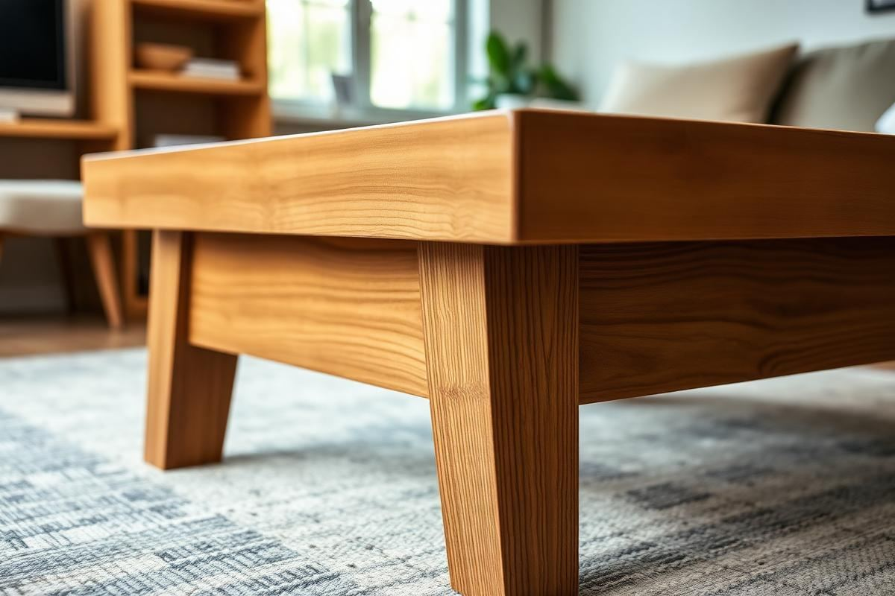

DIY Coffee Table Ideas That Don't Wobble

DIY Coffee Table Ideas That Don't Wobble is one of those topics where a little planning goes a long way. In this guide I walk through the process we use in real homes — not just what looks good in a photo, but what actually holds up over time.
Start here
Before you buy or move anything, measure the space and note how you actually use it. The best-looking room is one that matches how you live, so start with the routines: where you sit, where you drop keys, where the light falls in the afternoon.
The essentials
Focus on the pieces that do the most work. Get those right and the rest of the room comes together with much less effort. Aim for materials that patina rather than degrade, and colors you will still like in five years.
- Choose one clear focal point per room.
- Pick materials that improve with age.
- Layer textures instead of adding more colors.
- Leave visual breathing room — negative space is a design element.
Common mistakes
The mistakes we see most often are matching everything too tightly, over-scaling accessories, and skipping proper lighting. Fix those three and most rooms improve overnight.

Material Matters: Choosing Wisely for Stability
The foundation of a wobble-free DIY coffee table begins with your material selection. Softwoods like pine, while inexpensive (a 2x4x8 can be as low as $3-$5), are prone to warping and bowing, especially if not properly dried or stored. For a truly stable table, invest in hardwoods. Oak, maple, and walnut offer superior rigidity. A 1"x12"x8' board of red oak will run you about $60-$80, a significant jump, but entirely worth it for longevity. If budget is a primary concern, consider ¾” furniture-grade plywood, like Baltic Birch. A 4’x8’ sheet typically costs $70-$100 but provides excellent dimensional stability and can be finished beautifully. Steel or thicker aluminum tubing (1.5-inch square minimum) for legs, when welded or securely bolted, offers unparalleled stability for industrial or contemporary designs. Avoid reclaimed wood unless you're prepared to properly dry, plane, and seal it to prevent future movement. Imperfect wood might look charming, but it's a recipe for instability.
Smart Material Choices
- Red Oak (1" thick minimum): Excellent stability, beautiful grain, durable. $7-10/linear foot.
- Maple (1" thick minimum): Very dense, resists denting, good for clean lines. $8-12/linear foot.
- Baltic Birch Plywood (¾" thick): Stable, takes finishes well, good for modern designs. $70-100/sheet.
- Steel Square Tubing (1.5" x 1.5" x 1/8" wall): Industrial strength, requires welding or robust fasteners. $40-60 for an 8ft length.
Leg Day: Anchoring for Endurance
The attachment of your coffee table legs is critical. For wooden legs, using simple L-brackets or pocket-hole screws directly into the tabletop is often insufficient, leading to eventual wobble as wood moves or screws loosen. Instead, construct a robust apron frame (skirt) beneath your tabletop. This apron should be at least 2 inches wide and 3/4 inch thick, securely attached to the underside of the tabletop with wood glue and screws (e.g., 1 ½-inch #8 screws every 6-8 inches). The legs then attach to this apron, not the tabletop directly. Mitered joints reinforced with biscuits or mortise and tenon joints are the gold standard for connecting apron pieces, but strong wood glue and pocket-hole screws (1 ½-inch fine thread for hardwoods) also work well for DIYers. For metal legs, ensure they have thick mounting plates (at least 1/8 inch thick) with multiple pre-drilled holes. Use heavy-duty machine screws or lag screws (e.g., ¼-inch diameter, 1 ½-inch long) to attach them directly into a sturdy wood tabletop or reinforcement block.
Essential Leg Anchoring Techniques
Never skimp on hardware. Low-quality screws strip easily or bend, compromising stability. Look for hardened steel screws, and always pre-drill pilot holes to prevent splitting, especially in hardwoods. The pilot hole diameter should match the screw's shank, not its threads.
Bracing the Underside: Smart Reinforcements
Beyond the apron, strategic bracing can counteract racking forces that cause wobble. For larger tables (over 40 inches long), consider adding a stretcher bar or two between the longer sides of the apron, running parallel to the tabletop's shorter dimension. This creates a more rigid box structure. These stretchers can be 1.5 inches wide and 3/4 inch thick, secured with pocket-hole screws or mortise and tenon joints. For tables where the legs angle outwards, cross bracing (like an 'X' or 'V' shape) between the legs themselves provides immense lateral stability. If your design incorporates a lower shelf, this functions as a powerful brace in itself. Ensure the shelf is dadoed or strongly screwed into the legs or support structure. Think of your coffee table as a small building; the more interconnected and rigid its structural members, the less it will sway. Even an inexpensive 1x2 pine board, strategically placed and glued/screwed, can dramatically improve stability if integrated into a design plan.
Common Bracing Strategies
- Apron with stretchers: Creates a box frame beneath the top.
- Cross bracing (between legs): Essential for angled or slim leg designs.
- Lower shelf: Inherently adds stability if built securely.
- Corner blocks: Small wood blocks (e.g., 2x2x2 inches) glued and screwed into the corners where apron meets leg, providing triangulation.
Joinery Junctions: DIY Techniques for Strength
The strength of your joinery dictates the overall integrity of your coffee table. For DIYers without advanced woodworking tools, pocket-hole joinery is a fantastic accessible option. A Kreg Jig K4 kit, costing around $100, allows you to create strong, concealed joints easily. Always use wood glue in addition to screws; the glue provides significant shear strength that screws alone cannot match. For apron-to-leg connections, a simple butt joint reinforced with pocket holes and glue is a good starting point. However, if you're comfortable with a router, consider dado or rabbet joints for attaching shelves or internal dividers. These joints offer much more bearing surface for glue, resulting in a stronger, more lasting bond than butt joints. Even simple dowel joints, using a doweling jig (around $20-40), can dramatically strengthen butt joints, turning them into a much more robust assembly. The key is clamping pressure: ensure your joints are tightly clamped while the glue dries for maximum strength.
Strong Joinery for DIY Enthusiasts
Invest in a good set of bar clamps or pipe clamps. You'll need at least four, preferably longer ones (up to 48 inches). A set of two 24-inch bar clamps can cost $40-60. These are indispensable for strong glue-ups, ensuring tight joints throughout the drying process.
The Final Touch: Leveling and Finishing
Even the most perfectly constructed table can wobble on an uneven floor. Incorporate adjustable furniture glides or leveling feet into your design. These small additions (typically $5-$15 for a set of four) screw into the bottom of each leg, allowing you to fine-tune the height and eliminate any rocking. Remember to account for these feet in your initial leg length calculations. Beyond stability, the finish protects your investment. A good quality polyurethane (oil-based for durability, water-based for faster drying and less VOCs) applied in thin, even coats (3-5 coats recommended, with light sanding between) will protect your tabletop from spills, scratches, and humidity fluctuations that can eventually lead to wood movement. Don't rush the finishing process; it's as important as the construction itself for the table's longevity and appearance.
Ensuring a Perfect Plane
- Adjustable furniture glides: Essential for uneven floors.
- Protective finish: Polyurethane (oil-based for heavy use), varathane, or tung oil.
- Periodic re-tightening: Check all screws and bolts every 6-12 months.
- Moisture control: Keep your table away from direct heat sources or extreme humidity changes.
Key takeaways
- Match the room to how you actually live.
- Anchor with one main piece and clear lighting.
- Layer textures, not colors.
- Leave breathing room around every object.
Frequently asked questions
Where should I start?
Start with the largest piece and the light. Everything else — art, textiles, small objects — is easier to place once those two anchors are set.
What is a realistic budget?
Prioritize the pieces you touch every day. Spend more on those and less on decorative items, which are easy to swap over time.
How long should this last?
A well-chosen main piece should last 10–15 years. Refreshes come through textiles, art, and accessories, not full replacements.

Sophia Bennett is a certified interior stylist and the senior editor at Styleire. She has spent more than eight years helping homeowners and renters create warm, functional interiors, with hands-on experience across small city apartments and family homes. Her work has been informed by close collaboration with independent designers, craftspeople, and product testers.
View full profile →Related reading

How to Choose a Sofa: The Complete Buyer's Guide
A good sofa lasts fifteen years. Here is how to make sure the one you buy is one of them.

Upcycling Furniture Basics: A Beginner's First Project
Your first upcycle should be a small piece with good bones. Here is how to do it right the first time.

How to Paint Furniture So It Actually Lasts
How to Paint Furniture So It Actually Lasts — a clear, editor-tested guide covering the essentials without the filler.